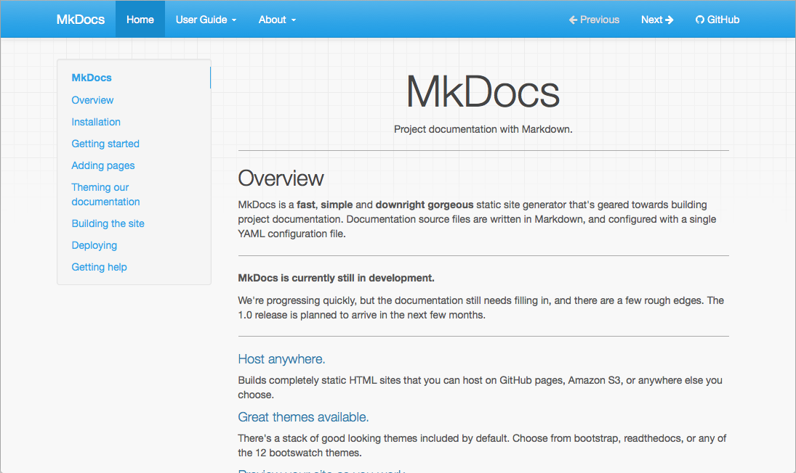

Choosing your Theme
Selecting and configuring a theme.
MkDocs includes two built-in themes (mkdocs and readthedocs), as documented below. However, many third party themes are available to choose from as well.
To choose a theme, set the theme configuration option in your mkdocs.yml
config file.
theme:
name: readthedocs
mkdocs
The default theme, which was built as a custom Bootstrap theme, supports most every feature of MkDocs.

In addition to the default theme configuration options, the mkdocs theme
supports the following options:
-
highlightjs: Enables highlighting of source code in code blocks using the highlight.js JavaScript library. Default:True. -
hljs_style: The highlight.js library provides 79 different styles (color variations) for highlighting source code in code blocks. Set this to the name of the desired style. Default:github. -
hljs_languages: By default, highlight.js only supports 23 common languages. List additional languages here to include support for them.theme: name: mkdocs highlightjs: true hljs_languages: - yaml - rust -
analytics: Defines configuration options for an analytics service. Currently, only Google Analytics v4 is supported via thegtagoption.-
gtag: To enable Google Analytics, set to a Google Analytics v4 tracking ID, which uses theG-format. See Google’s documentation to Set up Analytics for a website and/or app (GA4) or to Upgrade to a Google Analytics 4 property.theme: name: mkdocs analytics: gtag: G-ABC123When set to the default (
null) Google Analytics is disabled for the site.
-
-
shortcuts: Defines keyboard shortcut keys.theme: name: mkdocs shortcuts: help: 191 # ? next: 78 # n previous: 80 # p search: 83 # sAll values must be numeric key codes. It is best to use keys which are available on all keyboards. You may use https://keycode.info/ to determine the key code for a given key.
-
help: Display a help modal which lists the keyboard shortcuts. Default:191(?) -
next: Navigate to the “next” page. Default:78(n) -
previous: Navigate to the “previous” page. Default:80(p) -
search: Display the search modal. Default:83(s)
-
-
navigation_depth: The maximum depth of the navigation tree in the sidebar. Default:2. -
nav_style: This adjusts the visual style for the top navigation bar; by default, this is set toprimary(the default), but it can also be set todarkorlight.theme: name: mkdocs nav_style: dark -
locale{ #mkdocs-locale }: The locale (language/location) used to build the theme. If your locale is not yet supported, it will fallback to the default.The following locales are supported by this theme:
en: English (default)fr: Frenches: Spanish
See the guide on localizing your theme for more information.
readthedocs
A clone of the default theme used by the Read the Docs service, which offers the same restricted feature-set as its parent theme. Like its parent theme, only two levels of navigation are supported.

In addition to the default theme configuration options, the readthedocs
theme supports the following options:
-
highlightjs: Enables highlighting of source code in code blocks using the highlight.js JavaScript library. Default:True. -
hljs_languages: By default, highlight.js only supports 23 common languages. List additional languages here to include support for them.theme: name: readthedocs highlightjs: true hljs_languages: - yaml - rust -
analytics: Defines configuration options for an analytics service. Currently, only Google Analytics v4 is supported via thegtagoption.-
gtag: To enable Google Analytics, set to a Google Analytics v4 tracking ID, which uses theG-format. See Google’s documentation to Set up Analytics for a website and/or app (GA4) or to Upgrade to a Google Analytics 4 property.theme: name: readthedocs analytics: gtag: G-ABC123When set to the default (
null) Google Analytics is disabled for the
-
-
include_homepage_in_sidebar: Lists the homepage in the sidebar menu. As MkDocs requires that the homepage be listed in thenavconfiguration option, this setting allows the homepage to be included or excluded from the sidebar. Note that the site name/logo always links to the homepage. Default:True. -
prev_next_buttons_location: One ofbottom,top,both, ornone. Displays the “Next” and “Previous” buttons accordingly. Default:bottom. -
navigation_depth: The maximum depth of the navigation tree in the sidebar. Default:4. -
collapse_navigation: Only include the page section headers in the sidebar for the current page. Default:True. -
titles_only: Only include page titles in the sidebar, excluding all section headers for all pages. Default:False. -
sticky_navigation: If True, causes the sidebar to scroll with the main page content as you scroll the page. Default:True. -
locale{ #readthedocs-locale }: The locale (language/location) used to build the theme. If your locale is not yet supported, it will fallback to the default.The following locales are supported by this theme:
en: English (default)fr: Frenches: Spanish
See the guide on localizing your theme for more information.
Third Party Themes
A list of third party themes can be found in the MkDocs community wiki. If you have created your own, please feel free to add it to the list.